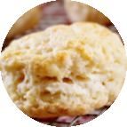
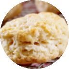

How to Make Gluten-Free Parmesan Biscuits
These biscuits taste like they were made at a restaurant. Count your carbs and you can work these into your meal plan. They go great with a nice bowl of healthy soup.
10 min prep time | 30 servings | 1 cookie per serving
Step-by-Step Instructions:
1. Preheat the oven to 375°F (190°C). Spray a baking sheet with cooking spray.
2. In a medium bowl, mix together the baking mix and margarine. Use a fork and hands to mix into coarse crumbs.
3. Add milk to the mixture and stir with a fork. Add the Parmesan cheese and incorporate into the mixture.
4. Drop about 1 Tbsp. at a time of dough mixture on the baking sheet for each biscuit. Bake for 12 minutes or until golden brown on top.